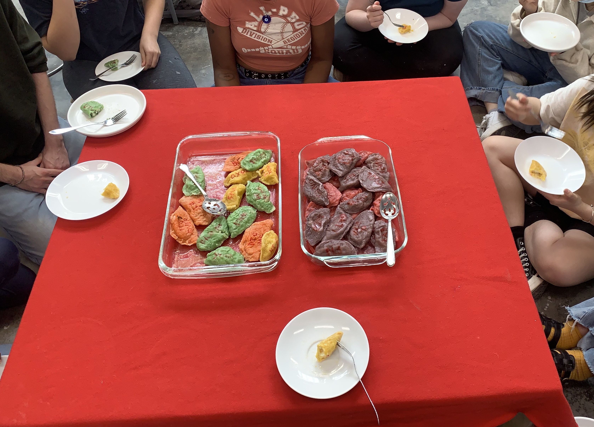
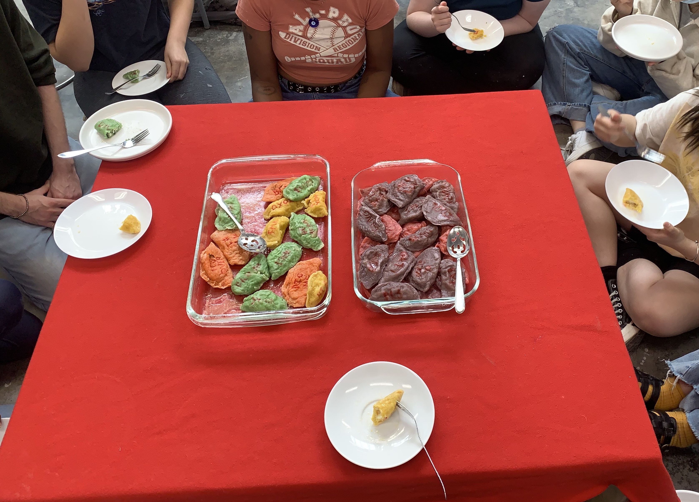

My Conversation Vareniki Lunch is meant to invoke a joyful, childhood emotion, and relish in the simple, unpretentious joy that you can get from childish cliches.
My Conversation Vareniki Lunch is an example of relational aesthetics. It consists of the audience, in this case my classmates, sitting on the ground around a short table, eating a meal of conversation vareniki. Vareniki are a traditional form of boiled Ukrainian dumplings, and are traditionally savory or sweet. In Conversation Vareniki Lunch, the vareniki are one of five flavors - potato, potato with bacon and cheese, spinach and ricotta, sweet cheese, and cherry. They are made to imitate the look of Valentine’s Day conversation hearts, and each flavor is colored yellow, orange, green, purple, and pink, in that order. All the vareniki have a quippy saying written on them - most from genuine conversation hearts and some similar humorous pop culture cliches.
I serve the vareniki one by one for each audience member, careful to choose something accurate and not hurtful (some vareniki have sayings like “nope” or “bye”). I serve two courses, savory first and then sweet. The critique is carried out during the piece. As a supplement to the piece, I reserved two sets of dumplings for a past and present love interest, which I will prepare for them in a similar manner to the main piece.
Conversation Vareniki Lunch invokes a childhood celebration of Valentine’s day, along with the adult, intentful act of cooking and caring for a loved one. The individual vareniki are notes representing how I felt making them (on worse days I made “eww” and “sorry” but on others I made “my 1” and “be my idol”). They are intimate to me, as both literal expressions of my thoughts, but also as expressions of my skills and effort as a cook. Sitting close together and all ingesting these vareniki is intimate for the artist as the one being judged and as the audience as the one offering up their bodies for this ingestion experiment. It lays out our relationship, summarizing it in a short quippy phrase, still more intimate and direct than it often is in an academic setting. I enjoy the vulnerability of cooking and admitting to caring or even thinking about someone, and the hope of Conversation Vareniki Lunch is to force this joyful, childish honesty in our formalized art critique space.